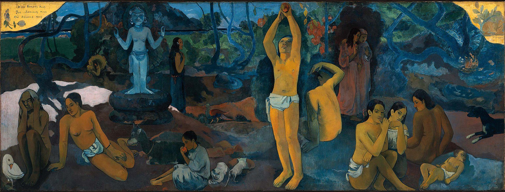

life purpose / soul mission
魂の使命が分からない
自分が何のために生まれてきたのか、分からない。「使命を生きなさい」と言われるほど、焦る。このまま何も見つけないで終わるのが怖い。この分野で名前の知られた人は、「使命は探しに行くものではない」と言い、四つの方法を挙げています。日本語の「生きがい」の来歴と、強制収容所を生き延びた精神科医が「意味」について書いたことも。

自分が何のために生まれてきたのか、分からない。この分野の本や動画では「使命を生きなさい」「魂の目的を思い出しなさい」と言われる。言われるほど、焦る。まわりの人は見つけているように見える。このまま何も見つけないで、人生が終わってしまうのが怖い。
この分野の教師、クリスティーナ・ロペス（理学療法の博士号と公衆衛生の修士号を持つ元臨床家）は、あるとき自分の視聴者に「いちばんの恐れと悩みは何ですか」と聞きました。何百件もの答えの大半が、これでした。「使命を見つけて生きることなく、人生の終わりを迎えること」。そして彼女は、その答えのすべてが「不安とストレスに満ちていた」ことに気づいて、すぐに動画を撮った、と言っています。
このページでは、ロペスがその問いにどう答えているかを見て、そのあとで、日本語にもとからある「生きがい」という言葉の来歴と、強制収容所を生き延びた精神科医が「生きる意味」について書いたことを、隣に置きます。
使命とは、何だと言われているのか
「この言葉には部分的に賛成です。ただ、魂のレベルでは、もう少し続きがあります」と言って、ロペスは二つのことを挙げます。
1．魂は、新しい経験を何よりも大切にする — 「魂は宇宙と同じように、絶えず広がっているエネルギーです。だから、新しいことを経験するために、ここへ来る。これはワッツの言っていることと重なります」
2．魂は、生まれる前に計画を立てている — 「どんな経験をしたいか、かなり細かく。ただし、人生が決められているという意味ではありません。計画どおりに行くこともあれば、行かないこともある。魂のレベルでは、そのどちらにも裁きはない」
「魂のレベルから見た使命とは、魂がこの人生のために立てた計画のことです。それだけです」
なぜ、追いかけると逆効果なのか
ここが、ロペスの答えの中心です。焦って探すほど、見つからなくなる。その理由を、彼女は二つの側から説明しています。
「追いかける、というエネルギーは、すでに縮こまっていて、恐れに満ちています。いまの自分に満足していないから、外に何かを追いかけて、手に入れたら気分がよくなると期待する。使命を探しているのは、頭——自我——です。ハイヤーセルフも、魂も、ガイドも、あなたの使命を知っている。知らないのは、自我だけ。なぜ自我が必死に探すかというと、自我の中心にあるのは支配で、自我は知らないものを支配できないからです。使命を知って、計画AとBとCと、やることの一覧にしたい」
「そして、恐れは電磁場を縮ませ、波動を下げる。縮んだ場では、引き寄せる力も下がる。使命は心（ハート）を通して届くのに、恐れと過活動の頭は、心から切り離す。だから、魂が送っている計画を見逃す」
ロペスは、ハーバード大学のマシュー・キリングスワースとダニエル・ギルバートの研究を引いています。「心がいまここから離れてさまようほど、人は不幸になる。たとえ、すばらしい場所へさまよっていても」。嫌いな仕事の机で、窓の外を見て、遠い浜辺でマルガリータを飲んでいるところを思い描く——それで幸せになるかというと、データはそうではない、と。「知恵の伝統が教えるとおり、私たちがいちばん幸せなのは、考えと行動が一致しているときです。それが皿洗いであっても」
「使命について考え続けることは、心をいまここから引き離して、さまよわせることです。さまようほど、幸せではなくなる」
いちばん大きな秘密、と
魂は、パンくずの道を作ります。ひとつ、パンくずを置く。あなたが一歩進む。次のパンくずを置く。また一歩。それが、魂が使命を明かす本当のやり方です。心のレベルで受け取る、小さなしるしをひとつずつ。幻、しるし、シンクロニシティ、人との会話——パンくずはいろいろな形で現れます」
「そして、人生の終わりに振り返って、こう言えるのです。ああ、私の使命はこれだったのか、と。それまでは、頭で知らないまま生きていて構わない。それは可能です。驚きと喜びのなかで、頭では知らないまま、毎日使命を生きることは」
何をすればよいと言われているのか
2．いまの自分を受け入れる — 「追いかけることは、いまの自分を受け入れていないことから来ます。不幸と低い波動からは、使命にたどり着けない——これを合言葉にしてください。いまいる場所を受け入れて、そこから一歩、また一歩。違うエネルギーで」
3．喜び、満足、好奇心へ手を伸ばす — 「パンくずは、必ず喜びと、わくわくと、好奇心のなかにあります。魂は、あなたの心に喜びを、わざと組み込んでいる。それが使命へ導くから。『何も心が躍ることがない、才能もない』という人は、好奇心から始めてください。どんな話題に、どんな分野に、好奇心を感じるか。それを追う」
ロペス自身の例。「何年も前、動画を作りたい、という直観がありました。機材も、YouTubeの仕組みも、何を話すかも、まったく知らなかった。最初の動画はひどいものでした。それでも、好奇心とわくわくがあったので続けた。10年後、こうなっています」
4．ひらめいたら、決然と動く — 「多くの人がここで間違えます。導きを求め、しるしを求め、受け取る。それなのに、ソファに座ったまま動かない。動かないなら、導きを求める意味は何なのでしょう」
おまけ：頭を静める — 「過活動の頭は、心から切り離す。使命もパンくずも、心で受け取るものだから」
もうひとつの動画で、ロペスは、この「手放し」を自分がどう実践しているかを語っています。「私は毎日、声に出してガイドに言います。『私の人生のどの領域にでも、必要と思うところに介入してよい、と許可します』。自由意志は侵されないので、向こうは、許可なしには手を出せない。だから、広い許可を出しておく。そうして、使命が一歩ずつ、向こうから現れてくるようにしている」。そして、「心の喜びは才能とつながっていて、才能は使命とつながっている。コンサートピアニストは、そのための道具箱を持って生まれてくる。あなたにも、自分では気づいていない道具箱がある」と。
日本語では「生きがい」
「何のために生きるのか」という問いに、日本語には、ずっと前から独自の言葉があります。
「生きることの喜び・張り合い」「生きる価値」を意味する言葉です。精神科医の神谷美恵子（1980年『生きがいについて』）は、これが日本語独自の表現で、外国語に訳そうとすると「生きるに値する」「生きる意味のある」とするほかない、と指摘しています。
神谷によれば、この言葉には二つの使い方があります。生きがいの対象を指すとき（「この子は私の生きがいです」）と、生きがいを感じている心の状態を指すとき。そして、この言葉は使命ほど大きなものを要求しません。趣味、学習、達成感、没頭、家族との生活、子どもの成長——研究者たちが挙げているのは、そういうものです。
生きがいの研究が盛んなのは、老年学の分野です。若さや役割を失っていく高齢者の多くが、自己否定に苛まれずに日々を過ごせるのは、それぞれの生きがいが、老いや喪失への拮抗因子として働いているからだ、と考えられています。
2000年代以降、「ikigai」という言葉は欧米でよく知られるようになりました。多くの場合、「好きなこと」「得意なこと」「世界が必要とすること」「お金になること」の四つの円が重なる中心が生きがいだ、というベン図とともに紹介されます。
英語版ウィキペディアの項目は、この図は日本のものではない、と書いています。2011年にアンドレス・スズナガが作った「目的（purpose）」の図を、マーク・ウィンが「ikigai」に置き換えたもので、「印象的だが誤解を招く」「非現実的な理想」と評されている、と。
日本語の「生きがい」には、「お金になること」も「世界が必要とすること」も、条件として入っていません。孫の成長でも、朝の散歩でもよい。四つの円が重なる一点を探す、という形は、ロペスが「追いかけると逆効果」と言った、まさにその形です。
強制収容所で「意味」を考えた精神科医
ウィーンの精神科医で、ナチスの強制収容所を生き延びた人です。その経験を書いた『夜と霧』は、世界的なベストセラーになりました。フランクルが作った心理療法「ロゴセラピー」は、生きる意味を求めることが、人間のいちばん中心にある動機だ、という考えにもとづいています。フロイト、アドラーに続く「ウィーン第三の学派」と呼ばれました。
フランクルは、意味を実現する道を三つ挙げています。
・世界に何かをもたらすこと（仕事、創造）
・何かを経験すること（自然、芸術、人を愛すること）
・ある態度を取ること（変えられない苦しみに対して、どう向き合うか）
そして、ロゴセラピーの技法のひとつに「反省除去（デリフレクション）」があります。症状や自分自身のことを考えすぎると、動けなくなる——だから注意を、自分から外へそらす、というものです。
フランクルの三つの道は、ロペスの「魂は新しい経験を何よりも大切にする」と、同じ場所を指しています。フランクルの二つ目「何かを経験すること」は、ワッツの「ただ生きていること」でもあります。そして、「反省除去」——自分の意味について考えすぎると動けなくなる——は、ロペスの「使命について考え続けるほど、心がさまよって不幸になる」と、まったく同じことを言っています。収容所を生き延びた精神科医と、この分野の教師が、別々の言葉で、同じ助言をしているということです。
近いことを言っているもの
- 手放し（サレンダー） — ロペスの「使命は探しに行くものではなく、来させるもの」の前提。別のページで扱っています
- シンクロニシティ — ロペスの「パンくずの道」。別のページで扱っています
- ソウルコントラクト — 「魂が生まれる前に立てた計画」という考え方。別のページで扱っています
- 生きがい — 上に書いた、日本語の側の言葉です
- ロゴセラピー — 上に書いた、フランクルの心理療法です
出典・参考
- Christina Lopes, Why You Should NEVER Chase Your Life Purpose. [Do This Instead!]（YouTube）魂の二つの真実、追いかけると逆効果になる理由、パンくずの道、四つの方法。引用は字幕による
- Christina Lopes, There's An Easy Way To Find Your Life Purpose（YouTube）「探すのは自我の運動」、手放しと静けさ、心の喜びと才能。引用は字幕による
- 生き甲斐（日本語版ウィキペディア）神谷美恵子の指摘、生きがいの分類、老年期の研究
- Ikigai（英語版ウィキペディア）海外に広まった「生きがいの図」が日本のものではないこと
- Viktor Frankl（英語版ウィキペディア）ロゴセラピー、意味を実現する三つの道、『夜と霧』
関連することば
 ascension / 5Dアセンションと5次元「アセンション症状」と検索した。骨まで疲れている。動悸がする。友人が急にいなくなった。理由の分からない悲しみがある。この分野で名前の知られた人は、それを何だと説明し、何をすればよいと言っているのか。「地球が5次元へ移る」という話はどこから来たのか。そして、同じ経験に精神医学がつけている名前。
ascension / 5Dアセンションと5次元「アセンション症状」と検索した。骨まで疲れている。動悸がする。友人が急にいなくなった。理由の分からない悲しみがある。この分野で名前の知られた人は、それを何だと説明し、何をすればよいと言っているのか。「地球が5次元へ移る」という話はどこから来たのか。そして、同じ経験に精神医学がつけている名前。 ascendant / rising signアセンダント（上昇宮）自分の星座の説明が、どうも自分に合わない。初対面の人から見た自分と、自分で思う自分が違う。占星術がそこに与えている名前が、アセンダント。太陽・月とあわせて「ビッグスリー」と呼ばれる3つ目。出生時刻が要る理由も。
ascendant / rising signアセンダント（上昇宮）自分の星座の説明が、どうも自分に合わない。初対面の人から見た自分と、自分で思う自分が違う。占星術がそこに与えている名前が、アセンダント。太陽・月とあわせて「ビッグスリー」と呼ばれる3つ目。出生時刻が要る理由も。 overactive mind / monkey mind頭のなかが静まらない考えが止まらない。夜中に目が覚めて、頭が回りはじめる。瞑想しようとしても、五分ともたない。「頭を静めなさい」と言われるけれど、どうすれば。この分野で名前の知られた人が、四年の隠遁生活のあとに街の暮らしで見つけた四つの方法と、「さまよう心」について脳科学が調べてきたこと。「心猿」という古い言葉も。
overactive mind / monkey mind頭のなかが静まらない考えが止まらない。夜中に目が覚めて、頭が回りはじめる。瞑想しようとしても、五分ともたない。「頭を静めなさい」と言われるけれど、どうすれば。この分野で名前の知られた人が、四年の隠遁生活のあとに街の暮らしで見つけた四つの方法と、「さまよう心」について脳科学が調べてきたこと。「心猿」という古い言葉も。 affirmationsアファメーションは効くのか「私は豊かだ」「私は愛されている」と毎朝唱えている。でも、唱えるたびに、嘘をついている気がする。効いているのか、逆効果なのか。この分野で名前の知られた人が「これを先に身につけないと効かない」と言う一つのこつと、38の言葉。この言葉の来歴（1910年、1984年）、日本語の「言霊」、そして心理学が2009年に見つけた「効く人と、逆効果になる人」の違い。
affirmationsアファメーションは効くのか「私は豊かだ」「私は愛されている」と毎朝唱えている。でも、唱えるたびに、嘘をついている気がする。効いているのか、逆効果なのか。この分野で名前の知られた人が「これを先に身につけないと効かない」と言う一つのこつと、38の言葉。この言葉の来歴（1910年、1984年）、日本語の「言霊」、そして心理学が2009年に見つけた「効く人と、逆効果になる人」の違い。 toxic people一緒にいると疲れる人会うたびに、消耗する。二十分お茶をしただけで、空っぽになる。でも、親だから、同僚だから、子どもの父親だから、縁を切れない。この分野で名前の知られた人は、「切って終わり」とは言わず、三つの手順を挙げています。日本語の「モラハラ」という言葉の来歴と、「境界線」について心理学の側が言っていることも。
toxic people一緒にいると疲れる人会うたびに、消耗する。二十分お茶をしただけで、空っぽになる。でも、親だから、同僚だから、子どもの父親だから、縁を切れない。この分野で名前の知られた人は、「切って終わり」とは言わず、三つの手順を挙げています。日本語の「モラハラ」という言葉の来歴と、「境界線」について心理学の側が言っていることも。 how to pray祈り方宗教は持っていない。でも、祈りたいときがある。誰に、どう言えばいいのか。手を合わせるだけでいいのか。この分野で名前の知られた人が「宗教の祈りとの違い」を語り、四つの手順を挙げているもの。日本語の「祈り」の広さ——神棚から包丁塚まで——と、「祈りは効くのか」を1872年から調べてきた研究の側が言っていること。
how to pray祈り方宗教は持っていない。でも、祈りたいときがある。誰に、どう言えばいいのか。手を合わせるだけでいいのか。この分野で名前の知られた人が「宗教の祈りとの違い」を語り、四つの手順を挙げているもの。日本語の「祈り」の広さ——神棚から包丁塚まで——と、「祈りは効くのか」を1872年から調べてきた研究の側が言っていること。